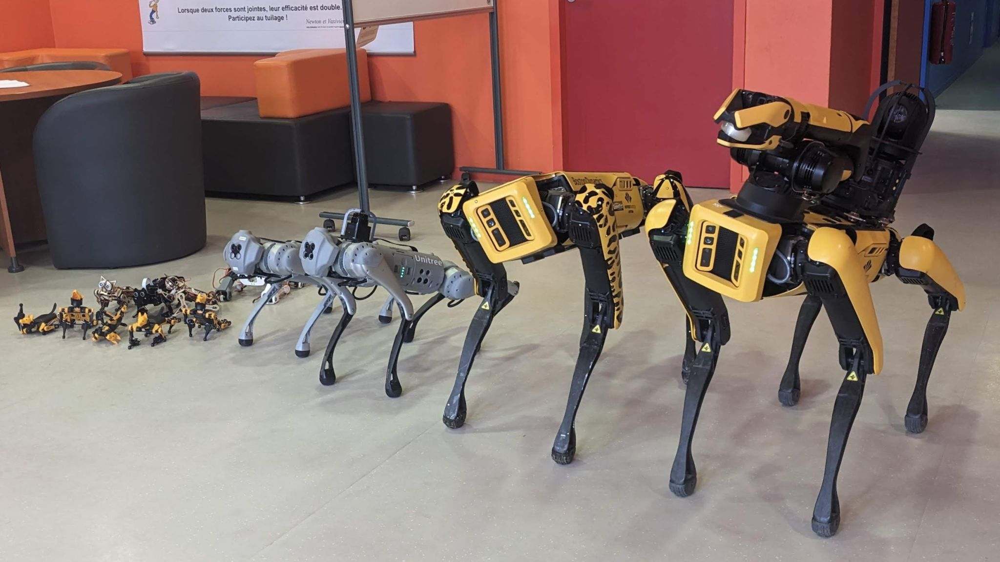
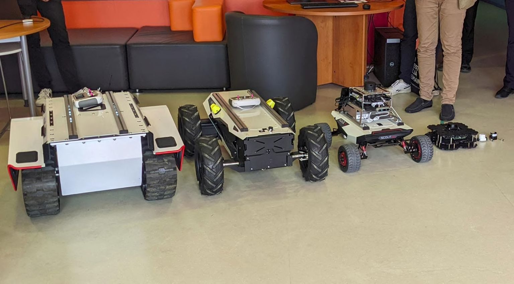

Le Techlab de l'École des Mines de Nancy joue un rôle crucial en établissant une connexion essentielle entre le monde des entreprises, de la recherche et de l'école. Son objectif est de créer un espace collaboratif où des projets divers, y compris ceux axés sur la robotique mobile, peuvent être réalisés. Ces projets impliquent souvent l'utilisation de différents robots, chacun ayant sa propre manette et son API spécifique.
 Le Techlab de l'École des Mines de Nancy joue un rôle crucial en établissant une connexion essentielle entre le monde des entreprises, de la recherche et de l'école. Son objectif est de créer un espace collaboratif où divers projets, y compris ceux axés sur la robotique mobile, peuvent être réalisés. Ces projets impliquent souvent l'utilisation de différents robots, chacun ayant sa propre manette et son API spécifique.
Le but du projet est donc de réaliser un programme capable d'abstraire le contrôle des différents robots du Techlab. Dans un premier temps, le développement vise les robots Bittle et turtle bot qui sont destinés à un usage pédagogique. Par la suite, le programme devra continuer d'être développé pour permettre le contrôle des différents robots présents au Techlab.
Dans le cadre de la réalisation du projet, nous avons séparé notre travail en trois thématiques principales :
Les controllers : ces modules doivent abstracter et simplifier le contrôle de tous les robots, en uniformisant leur interface pour une utilisation plus conviviale.
Une partie interface : nous avons choisi Streamlit pour créer notre interface, car cela facilitera sa réutilisation dans d'autres projets du Techlab.
Ros (Robot Operating System) : bien que plusieurs robots utilisent cette surcouche pour abstraire leur contrôle, nous n'utiliserons pas directement l'écosystème ROS, car il est trop complexe pour le temps de développement dont nous disposons.
Merci à Loick Briot ainsi qu'aux différents membres de l'équipe du Techlab pour leur accueil et suivis